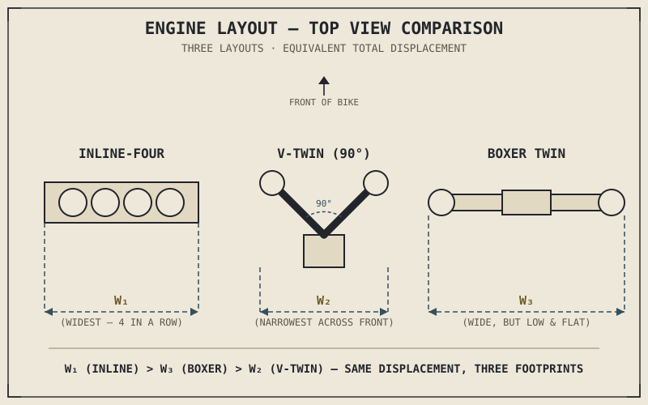

A parallel twin, a V-twin, and a flat twin can share the exact same displacement, the same bore and stroke, and even the same firing interval from Chapter 2.10 — and still vibrate through the handlebars in three completely different ways, sit inside three completely different-shaped frames, and produce three unmistakably different exhaust notes. Cylinder count answered how many. This chapter answers a genuinely separate question: arranged how, and why does that arrangement matter as much as it does.
Chapter 2.10 deliberately treated cylinder count as a question distinct from cylinder arrangement, closing with a promise that layout would get its own full treatment. That promise is what this chapter delivers — and it turns out layout isn't a cosmetic choice or a matter of engine sound alone, but a decision that reaches directly into vibration, packaging, and the width Chapter 1.2 already established as one of a motorcycle's defining advantages.
Inline: The Simple, Widening Row
An inline engine arranges its cylinders in a single row, sharing one crankshaft laid out along that same line. It's the most straightforward layout to design, manufacture, and service — one cylinder head casting, one camshaft or camshaft pair running the full length, and a firing interval, as Chapter 2.10 described, that's simple to space evenly across the crankshaft's rotation. This simplicity is exactly why inline layouts are so common for triples and fours.
The cost is direct and unavoidable: each additional cylinder in a row makes the engine, and therefore the motorcycle built around it, wider. Chapter 1.2 established narrowness as one of the core mechanical advantages a motorcycle has over a car, and Chapter 2.10 already flagged width as one of the real costs of adding cylinders — an inline layout is where that cost is paid most literally, since every cylinder sits directly beside the last one with nothing folding the engine's footprint back on itself.
V-Engines: Trading Width for Height and Complexity
A V-engine splits its cylinders into two banks set at an angle to each other, both banks sharing a common crankshaft, with the V-angle between them a deliberate design choice rather than an incidental detail. Because the two banks angle away from each other rather than sitting side by side, a V-engine with a given cylinder count is meaningfully narrower across the front than the equivalent inline layout would be — the same total cylinder count, packaged into less lateral space, directly countering the width penalty the previous section just described.
That narrower footprint isn't free. A V-engine needs two cylinder heads instead of one, its own more complex camshaft drive reaching each bank, and generally more intricate manufacturing than a single straight row of cylinders. The V-angle itself is a genuine engineering lever, not an arbitrary styling choice: certain angles, particularly 90 degrees for a V-twin, allow the reciprocating forces from each bank's piston to largely cancel each other out as they move, producing excellent primary balance — smooth running — without needing the additional balance shafts Chapter 2.17 will cover as a solution for less naturally balanced layouts. Other V-angles trade some of that natural smoothness for a more compact, tighter overall package. Choosing a V-angle is choosing a specific point on a real trade curve between smoothness and compactness, not picking a number that sounds aggressive.
A V-angle isn't decoration. It's a specific answer to a specific physics problem — how much of the vibration from opposing pistons can be made to cancel itself out before it ever reaches the rider.

An inline-four, a 90-degree V-twin, and a flat/boxer twin shown from above, comparing overall width and cylinder bank arrangement across the three layouts at equivalent total displacement.
Boxer: Opposed Pistons and a Different Shape of Width
A boxer, or flat engine, takes the V-engine's angled banks and opens them all the way to 180 degrees, laying the cylinders flat and opposing each other horizontally rather than angling upward. Pistons on opposite sides of a boxer engine move outward and inward simultaneously, mirroring each other's motion almost exactly, which produces exceptionally good primary balance for much the same reason a well-chosen V-angle does — opposing reciprocating masses cancel a large share of each other's vibration directly, rather than relying on additional balance shafts.
The boxer's low, flat shape also lowers the engine's centre of mass compared to an inline or V-engine of similar displacement, which has real consequences for how the whole motorcycle handles — a preview of ideas Part IV's chassis geometry and Part VIII's physics will return to directly. But the boxer's width penalty simply moves rather than disappears: instead of growing forward-to-back like an inline engine, a boxer's cylinders protrude out to either side of the bike, which can affect ground clearance in a corner and rider leg position, and leaves those protruding cylinders more exposed than a narrower engine would be in a low-speed tip-over.
A Common Misconception, Cleared Up Early
It's tempting to treat engine layout as primarily an aesthetic or acoustic choice — riders often describe a V-twin's rumble or an inline-four's scream as a matter of character or brand identity, disconnected from engineering. That sound is real, but it isn't arbitrary: it's a direct, audible consequence of the firing interval Chapter 2.10 introduced, which layout directly shapes by determining how the crank pins and cylinder banks are arranged relative to each other. A V-twin's distinctive uneven exhaust note and an inline-four's smoother wail aren't stylistic decisions layered on top of the engineering — they're the engineering, made audible.
More importantly, layout ripples outward through exactly the kind of coupling Chapter 1.3 introduced at the very start of this book: choosing inline, V, or boxer doesn't just decide vibration character, it decides overall width, centre of mass height, and how the whole chassis has to be designed around the engine sitting inside it. Layout is never a decision made in isolation from the rest of the motorcycle, even though it's easy to discuss it as if it were.
Where This Leads
Displacement, bore-to-stroke ratio, compression ratio, cylinder count, and now cylinder layout — this part of the book has now covered every major geometric and architectural decision that goes into designing an engine before a single drop of fuel is even considered. Chapter 2.12 brings all of it together at once, showing exactly how these choices combine to produce the torque and power curves that Chapter 1.5 first introduced as vocabulary and every chapter since has referenced without fully explaining.
Key Concepts to Remember
- Cylinder layout — inline, V, or boxer — is a separate design question from cylinder count, answering how cylinders are arranged rather than how many there are.
- Inline layouts are simple to manufacture but grow directly wider with each added cylinder, paying Chapter 1.2's narrowness cost most literally.
- V-engines trade a narrower front footprint for two cylinder heads and added manufacturing complexity, with V-angle acting as a genuine lever between smoothness and compactness.
- Boxer engines achieve excellent primary balance through directly opposing pistons and lower an engine's centre of mass, at the cost of width extending out to the sides rather than front-to-back.
- Engine sound and vibration character are direct, audible consequences of firing interval and layout, not stylistic choices layered separately on top of the engineering.
Cross-References
| ← Ch. 2.10 | Introduced cylinder count and firing intervals; this chapter completes the picture by covering how those cylinders are physically arranged. |
| ← Ch. 1.2 | Established narrowness as a core motorcycle design value; this chapter shows how each layout pays that cost differently. |
| ← Ch. 1.3 | Established that no component decision happens in isolation from the rest of the system; this chapter applies that directly to engine layout's ripple effects on chassis and packaging. |
| → Ch. 2.12 | Brings displacement, bore and stroke, compression ratio, cylinder count, and layout together to explain the shape of a real torque and power curve. |
| → Ch. 2.17 | Engine balance and vibration in full, building directly on the primary balance differences between layouts introduced here. |